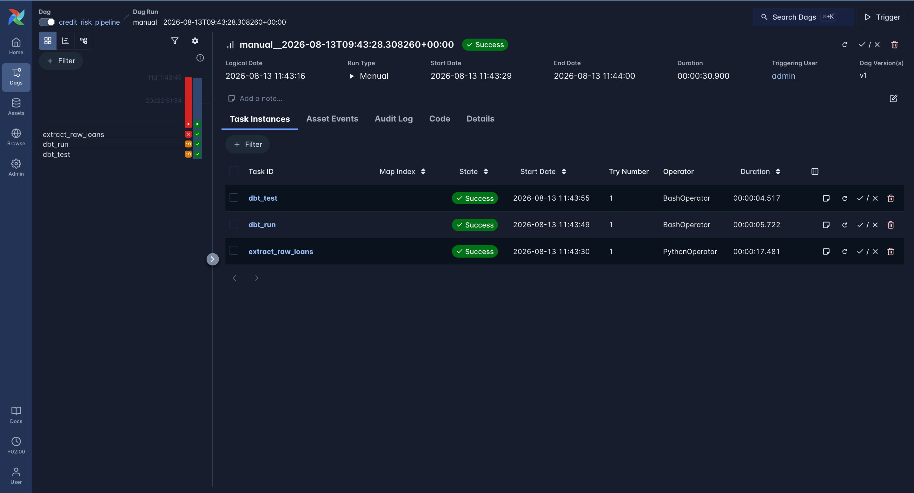
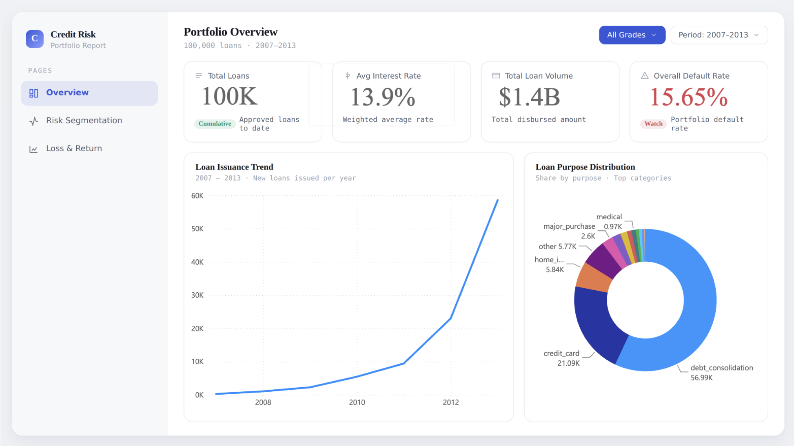
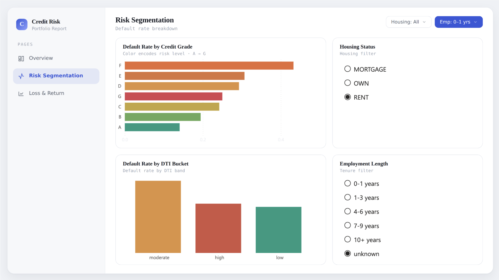
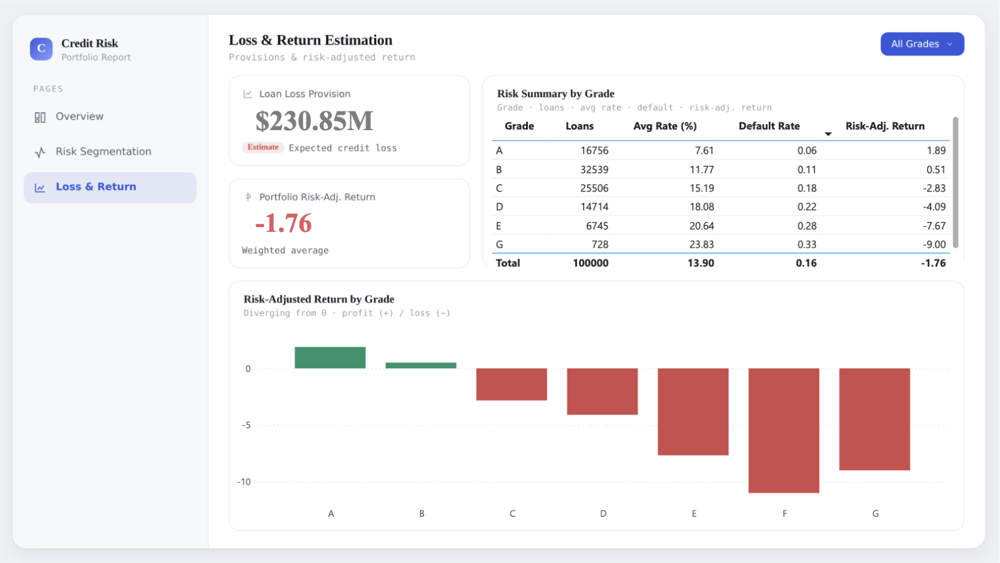
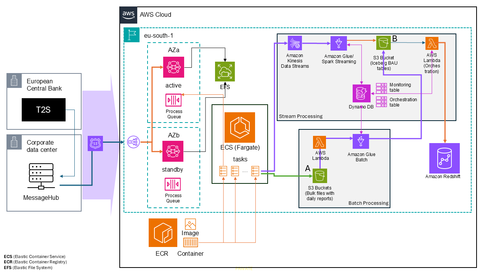
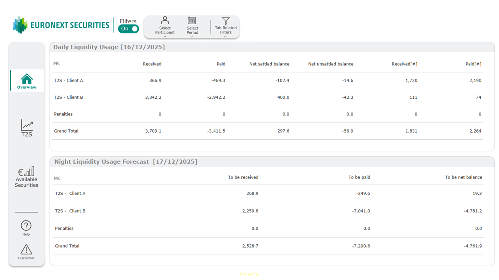
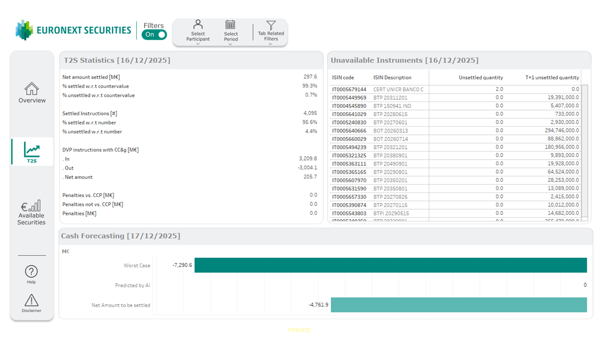
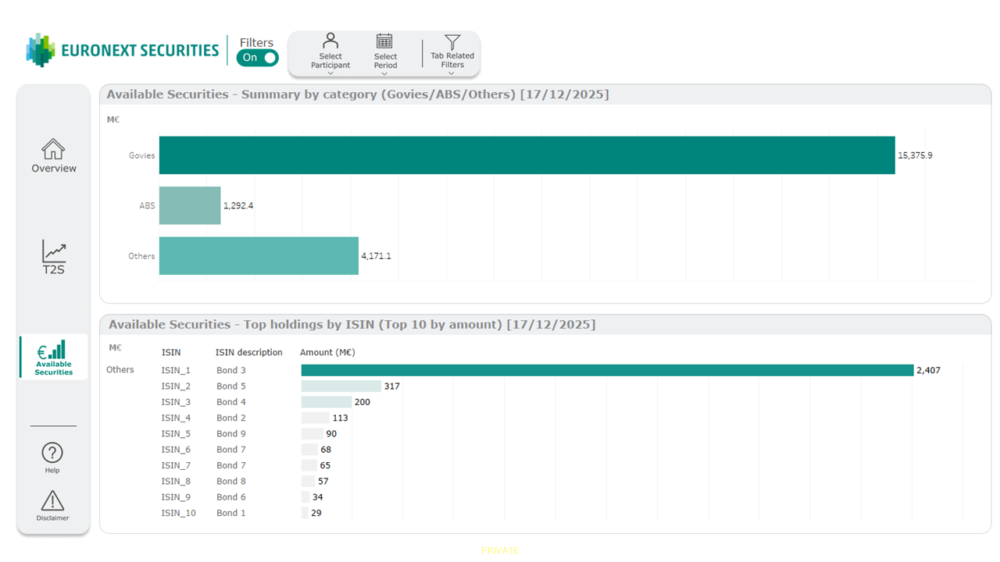

// projects
Six projects — one from a real financial-market employer.
One flagship built deep, a real-world project from a post-trade finance internship,
three supporting projects chosen for contrast — batch vs. streaming vs. RAG, different
cloud environments — and a running SQL practice log. Click one below to open it.
Credit Risk Analytics Pipeline
Raw Lending Club loan data → tested dbt Star Schema (4 dimensions) → orchestrated pipeline → Power BI dashboard, modeled on the credit
architecture
data model — star schema
key design decisions
Maturity-based sampling — loans need time to reach a terminal status
(max term is 60 months). An initial recency-biased sample produced an unrealistic
~0.02% default rate, since most loans were still Current. Filtering to
loans issued 5+ years before the dataset's latest date turned this into a realistic
~15% overall default rate.
Deterministic surrogate keys — the source dataset's ID columns are
scrubbed for privacy. A hash of distinguishing columns still produced duplicate keys
(up to 56 collisions on identical loan terms), which caused a join explosion in
fct_loans against three dimension tables. Adding
row_number() over (partition by loan_hash) into the hash guarantees
mathematical uniqueness instead of relying on low collision probability.
data quality
17 dbt tests run on every execution: schema tests (uniqueness, not-null on primary keys, referential integrity across all three dimension joins) plus custom business-rule tests — funded amount never exceeds requested loan amount, interest rates fall within a realistic range.
validated results
Default rate rises monotonically A → F, confirming both the sampling strategy and the mart layer's join integrity.
status
Extraction, staging, intermediate, and mart layers complete, with all 17 dbt tests
passing. Airflow DAG live and running successfully — extract_raw_loans →
dbt_run → dbt_test. Power BI dashboard delivered, three views. GitHub
Actions CI is next.

Successful DAG run — extract_raw_loans → dbt_run → dbt_test, all green.
power bi dashboard
Three business-facing views built on top of the mart layer — portfolio-level KPIs, risk segmentation with interactive filters, and loss/return estimation by grade.

Portfolio Overview — volume, rate, issuance trend, and loan-purpose mix at a glance.

Risk Segmentation — default rate by grade and DTI bucket, filterable by housing status and employment length.

Loss & Return Estimation — provisioning and risk-adjusted return, A (profitable) through G (loss-making).
FastAPI Docs Agent
A retrieval-augmented, tool-using assistant that answers questions about FastAPI by
searching its official documentation, falling back to searching GitHub issues on
the fastapi/fastapi repo when the docs don't have the answer. Implements
both a fixed RAG pipeline and an agentic version so the difference is visible directly
in the repo.
architecture
request flow — plain RAG
Step 2 (rag.py) retrieves the top-k chunks and builds the context and prompt. The agentic path (agent.py) follows the same shape but loops — Claude can request a tool call instead of a final answer, the result feeds back in, and this repeats until Claude returns a plain-text answer.
why this project
Grounded, cited question-answering over a large evolving document set — internal wikis, customer support, developer docs — is one of the most common applied-AI patterns in industry. This reproduces it on a real, sizable public documentation set (153 files, ~1,284 chunks) chosen because it's well-structured and code-heavy, a realistic stress test for retrieval.
evaluation
Retrieval quality is measured separately from answer quality — 15 hand-written questions with known-correct source documents, reporting hit-rate@k without calling Claude at all:
The correct document is almost always in the top 3, even when it isn't the single top result — a healthy sign for generation, since Claude sees the right context even on an imperfect top-1 match.
status
Complete: ingestion, chunking, embeddings, plain RAG, agentic RAG with GitHub-issue tool use, a CLI, and a retrieval evaluation suite.
Cloud Migration of a Real-Time Liquidity Dashboard
A yearlong Data Engineer internship at Euronext Securities Milan (the Central Securities Depository behind Borsa Italiana, the Italian Stock Exchange), formalized into my MSc thesis: redesigning a mission-critical liquidity monitoring tool used by institutional treasury teams, migrating it from on-premises infrastructure to an event-driven AWS architecture.
the domain
In post-trade finance, every securities trade must settle — cash and securities exchanging hands — within a strict window (T+2 in the EU, moving to T+1 in 2027). The dashboard this project redesigns gives institutional treasurers real-time visibility into their cash accounts so they can pre-fund settlements and avoid regulatory penalties for late settlement.
architecture

Standard real-time flow: ISO 20022 settlement messages → ECS (Fargate) → Kinesis/Glue (stream) + S3/Glue (batch) → Redshift → Tableau. A parallel recovery path (not pictured) handles message loss via manual re-ingestion.
my role
Contributed across the pipeline rather than owning one layer end-to-end: built Glue Streaming/batch jobs (Kinesis → Iceberg, and CSV → Parquet for Redshift/Athena), wrote and modified Redshift stored procedures and views for the DataMart layer, ran User Story–based validation across Glue jobs and Redshift tables to catch column mismatches and null/blank-handling bugs, and built the Tableau dashboards below on top of that data.
key design decisions
Overwrite-based → event-driven. The legacy system stored only the latest status of each settlement instruction, overwriting prior states — sufficient for daily reporting but blind to intraday activity and unable to reconstruct history. The redesign treats settlement as a sequence of discrete lifecycle events (matched, partially settled, settled, failed), enabling both real-time monitoring and later historical analysis from the same data.
Deterministic first, AI-ready by design. The PoC implements worst-case liquidity exposure as a deterministic calculation rather than a prediction — for a mission-critical financial tool, an auditable rule beats an opaque model. The architecture reserves a defined integration path for an AI-based forecasting model (AWS SageMaker) as a future addition, without making it a dependency of the core system.
Multi-tenant data isolation. Each institutional client can see only its own accounts. Isolation is enforced at three layers: row-level filtering in Redshift by account and legal-entity ID, least-privilege IAM roles binding Tableau's server identity to specific credentials, and matching user-based filters in the Tableau workbooks themselves.
dashboards (Tableau)
Three views, screenshots anonymized (client names masked, account identifiers removed) — approved for external use as part of the thesis.

Overview — today's settled cash position and tomorrow's forecasted overnight liquidity need, by client.

T2S Statistics — settlement completion rate, blocking instruments by ISIN, and worst-case next-day cash exposure.

Available Securities — holdings by asset class and top holdings by ISIN, for collateral and funding planning.
status
PoC complete and validated — core liquidity KPIs reproduced from AWS-based data with consistent sign and order of magnitude versus the legacy dashboard. Full production replacement is intentionally out of scope (some legacy features — tender-specific flows, real-time corporate actions, full collateral-eligibility rules — remain future work, since the underlying data isn't yet available in the cloud environment). Thesis supervised jointly by Prof. Anton Dignös (Free University of Bozen-Bolzano) and Dr. Enrico Papalini (Euronext Securities Milan).
Real-Time Weather Monitoring System
A live streaming pipeline — OpenWeatherMap API → Kafka → Spark Streaming → MySQL + a Streamlit dashboard — built to practice event-driven data engineering rather than batch ETL.
architecture
infrastructure
The whole stack — Kafka, Zookeeper, Spark, MySQL, and Kafka-UI — runs as one Docker Compose environment, which is the part that made this project worth doing: getting five services to actually talk to each other in real time, not just processing a static file.
GCP Cricket Statistics Pipeline
An end-to-end pipeline on Google Cloud — Cricbuzz API → BigQuery → Cloud Composer (managed Airflow) → Looker — run on a daily schedule, to get hands-on with the GCP-native equivalent of the AWS stack used elsewhere in this portfolio.
architecture
8 Week SQL Challenge (Danny Ma)
A running practice log for Danny Ma's 8 Week SQL Challenge — not a showcase project, kept public as evidence of consistent SQL practice.
More projects — including a Spotify AWS ETL pipeline and other data/ML work — are on github.com/gyngwon.